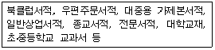
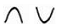

전자출판기능사 (2009-03-29 기출문제)
1과목: 출판론
1. 단행본의 출판 기획에 대한 내용으로 가장 거리가 먼 것은?
- 출판이념이나 편집방침
- 독자가 찾는 내용과 채산성
- 발간 주기
- 간생시기와 예측부수
(정답률: 66%)

2. 인쇄기의 가압방식 중 판판 위에 종이를 올려놓고 압반으로 압력을 주어 인쇄하는 방식은?
- 원압식
- 윤전식
- 회전식
- 평압식
(정답률: 76%)
3. 출판기획시 예상되는 불확실성의 요소나 영향에 크게 구애받지 않는 도서의 예로 가장 적당한 것은?
- 수험용 학습참고서
- 소․중형 사전
- 정부 주도형의 교과용 도서
- 전집 또는 총서류
(정답률: 80%)
4. 출판물의 종류에 대한 설명으로 틀린 것은?
- 단행본은 하나의 주제를 완결하여 한권 또는 분철하여 내는 출판이다.
- 문고본은 소형의 경장본으로 대중 보급을 목적으로 하여 출판한 것이다.
- 총서는 학문영역별로 편제하여 해설을 붙여 단권 또는 수권으로 출판한 것이다.
- 전집은 동류의 저작에 대하여 계통을 세워 연대별, 유형별, 개인별, 사건별로 모아 단권 또는 수권으로 출판한 것이다.
(정답률: 60%)
5. 오스트발트의 색입체를 수평으로 잘랐을 때 나타나는 것은?
- 동일 채도면
- 동일 색상면
- 동일 명도면
- 동일 조도면
(정답률: 77%)
6. 다음 중 출판의 기능으로 가장 적합하지 않은 것은?
- 문화의 창조와 전승 기능
- 지식의 보급과 교육 기능
- 보도 기능
- 오락 기능
(정답률: 74%)
7. 양장제책에서 배킹(backing) 작업을 하는 주된 이유는?
- 표지에 내수성을 강하게 하기 위해서
- 책표지가 잘 펼쳐지도록 하기 위해서
- 표지에 묻은 풀을 빨리 말리기 위해서
- 책의 두께를 일정하게 유지하기 위해서
(정답률: 79%)
8. 제책을 하는 목적이라고 볼 수 없는 것은?
- 인쇄된 종이를 흩어지지 않게 한다.
- 잉크의 전이를 좋게 한다.
- 문화의 기록, 지식의 원천으로서 오래 보존하기 위한 것이다.
- 읽기에 편하도록 하기 위한 것이다.
(정답률: 86%)
9. 성공적인 출판기획 성과를 얻기 위해 갖추어야 할 요건으로 가장 거리가 먼 것은?
- 창의성
- 공익성
- 적시성
- 적의성
(정답률: 83%)
10. 제책 공정 중 속장과 겉장을 연결하는 부분으로 속장의 내구력을 결정하는 것은?
- 접지
- 면지붙이기
- 장합
- 표지만들기
(정답률: 73%)
11. 기업에서 일상적으로 처리하는 주문서, 송장 등과 같은 기업 간의 상거래 정보를 종이로 된 문서나 전표 대신에 컴퓨터가 처리할 수 있는 표준화된 형태와 코드체계를 이용하여 컴퓨터 간에 전자적인 전송수단을 통해 교환하는 시스템을 무엇이라 하는가?
- ISBN(International Standard Book Number)
- EDI(Electronic Data Interchange)
- DOI(Digital Object Identify)
- VAN(Value Added Network)
(정답률: 79%)
12. 포지티브형 PS판의 제판공정을 옳게 나타낸 것은?
- 노광→정착→현상→고무칠→판완성
- 노광→현상→정착→고무칠→판완성
- 부식→노광→현상→정착→판완성
- 노광→현상→고무칠→정착→판완성
(정답률: 72%)
13. 무아레(moire) 현상에 관한 설명으로 옳은 것은?
- 스크린 각도가 맞지 않아 발생하는 기하학적 무늬현상
- 스크린 각도가 정확히 맞아 기하학적 무늬가 발생하지 않는 현상
- 컬러인쇄에서 잉크가 퍼지는 현상
- 컬러인쇄에서 잉크가 잘 마르지 않는 현상
(정답률: 79%)
14. 연속 계조를 망점 계조로 변환시키고자 할 때 사용하는 스크린으로서 일정한 크기로 이루어진 점(dot)의 수량을 변화시켜 계조를 표현하는 방식을 무엇이라고 하는가?
- AM 스크리닝
- FM 스크리닝
- LIP 스크리닝
- CIP 스크리닝
(정답률: 72%)
15. 비닐로 책의 표지를 만드는 방식으로 사전류와 성경책, 다이어리 등의 제작에 가장 적합한 제책 방식은?
- 고주파 제책
- 트윈링 제책
- 스프링 제책
- PVC링 제책
(정답률: 83%)
16. 다음과 같은 색체가 동일한 양으로 혼합되었을 때 그 결과로 가장 옳은 것은?
- 파랑+초록=보라
- 빨강+파랑=갈색
- 녹색+노랑=연두
- 빨강+노랑=자주
(정답률: 90%)
17. 대부분의 피인쇄체에 인쇄가 가능하며, 인쇄 적용 범위가 넓고 잉크층이 가장 두꺼운 인쇄방식은?
- 평판 인쇄
- 공판 인쇄
- 오목판 인쇄
- 볼록판 인쇄
(정답률: 54%)
18. 스크린 제판법 중 수공적 제판법에 해당되지 않는 것은?
- 블록킹아웃법
- 방염법
- 직접법
- 커팅법
(정답률: 64%)
19. 출판물 유통에서 판매시점정보관리를 의미하는 용어는?
- ISBN
- ISSN
- KDC
- POS
(정답률: 80%)
20. 매우 작은 잉크방울이 피인쇄체에 충돌하여 화상이 형성되는 인쇄 방법은?
- 부출 인쇄
- 폼 인쇄
- 잉크제트 인쇄
- 카본 인쇄
(정답률: 66%)
2과목: 전자 출판
21. PDF(Portable Document Format)에 대한 설명으로 틀인 것은?
- 일종의 문서저장 포맷이다.
- PDF 형식의 파일을 보거나 프린트하기 위해서는 아크로뱃 리더가 필요하다.
- XML과 함께 e-book의 활용하고 있다.
- PDF 파일을 XML 파일 포맷으로 전환할 수 없다.
(정답률: 73%)
22. 출판유통에서 서적의 유통경로로 틀린 것은?
- 출판사→도매서점→소매서점→독자
- 출판사→지정협동서점→출판협동조합→독자
- 출판사→인터넷서점→독자
- 출판사→총판․특약점․지사→소매서점→독자
(정답률: 80%)
23. 인터넷 상의 많은 정보 중에서 자신의 필요에 맞는 것을 찾기 위해서는 검색엔진을 사용할 수 있어야 한다. 검색 엔진에 대한 설명으로 적절하지 않은 것은?
- 검색 엔진은 흔히 검색사이트 또는 서치사이트라고도 한다.
- 검색 엔진의 수는 현재 대략 5가지 정도가 있다.
- Yahoo나 Naver 등이 검색 엔진의 일종이다.
- 검색 엔진은 키워드형, 주제별, 메타형, 통합형 등으로 분류할 수 있다.
(정답률: 88%)
24. 다음 중 인터넷 정보 표시 언어는?
- DOI
- XML
- FTP
(정답률: 74%)
25. 다음 중 웹페이지 제작을 위한 웹에디팅 프로그램이 아닌 것은?
- 나모웹에디터
- 포토샵
- 드림위버
- 프론트페이지
(정답률: 78%)
26. CD-ROM 출판물 제작 과정에서 베타 테스트(beta text) 의미에 대하여 가장 옳게 나타낸 것은?
- 제작 과정의 효율성 시험
- 제작 과정의 신속성 시험
- 외부인에서 의뢰하는 성능 시험
- 회사 내부에서 주로 수행하는 성능 시험
(정답률: 72%)
27. 평판스캐너(flatbed scanner)에 대한 설명으로 옳지 않은 것은?
- 주사헤드와 기록헤드가 수평 방향으로 왕복 이동하는 방식이다.
- 드럼 스캐너에 비해 기계적 정밀도를 얻기 쉽고, 주사 속도를 빨리 할 수 있다.
- 드럼 스캐너에 비해 간편하고, 가격이 저렴하다.
- 전하결합소자(CCD)에 의해 이미지를 읽어 들인다.
(정답률: 67%)
28. 전자출판용 응용 프로그램 중에서 디렉터(Direct),툴북(Tool book), 오소웨어(Author ware)와 같은 프로그램의 주된 용도는?
- 사운드 파일이미지 처리 프로그램
- 이미지 처리 프로그램
- CD-ROM 저작도구
- DTP용 소프트웨어
(정답률: 50%)
29. 인터페이스 설계시 고려해야 할 사항으로 옳은 것은?
- 상호작용성을 고려해야 한다.
- 단순한 구조보다는 복잡한 구조를 갖도록 한다.
- 가능한 메뉴를 다양하게 하고, 아이콘 실행방식을 복잡하게 설계한다.
- 화려한 이미지를 위해 CD-ROM의 용량은 무시해도 좋다.
(정답률: 78%)
30. BMP(bitmap) 형식에 대한 설명으로 틀린 것은?
- 그래픽 파일의 한 형식으로 윈도우에서 사용되기 시작한 가장 단순한 파일 포맷이다.
- 다양한 화상을 표현할 수 있다.
- 압축파일 형태이기 때문에 파일의 크기가 작다.
- 이미지 편집 프로그램에서 지원된다.
(정답률: 72%)
31. 그림이나 사진을 직접 그려서 입력하는 장치로 그래픽 디자인이나 설계분야에 이용되고 있는 것은?
- 디지타이저
- 스캐너
- 광학판독기
- 플로터
(정답률: 77%)
32. 기사최재부터 지연편집, 교정 및 인쇄용 원판을 만들기까지 신문제작의 전 과정을 전산화하는 것을 의미하는 것은?
- HTS(Hot Type System)
- CTS(Cold Type System)
- CTS(Computerized Typesetting System)
- HWP(Hand Written System)
(정답률: 86%)
33. 1킬로바이트(KB)는 몇 바이트(byte) 인가?
- 256
- 512
- 1024
- 2048
(정답률: 78%)
34. 글꼴이나 그림의 편집 상태를 유지하면서 인터넷으로 전송할 수 있으며, 전용 프로그램을 통해 화면책으로 내용을 볼 수 있는 포맷은?
- HTML
- FPAD
- SGML
(정답률: 82%)
35. 아날로그 방식과 비교하여 디지털 데이터의 특성으로 가장 거리가 먼 것은?
- 부분적인 데이터 손실로 인해 내용을 잃을 수 있다.
- 쌍방향 커뮤니케이션이 어렵다.
- 데이터 저장 유형이 달라 해독이 불가능할 수도 있다.
- 해독용 장치 등이 필요하다.
(정답률: 79%)
36. 일반적인 출판물 종류별 제책방식으로 가장 적합하지 않는 것은?
- 사전류, 장서류-양장 제책
- 대학교재, 교양서적, 소설류-반양장 제책
- 일기장, 수첩, 주간지-호부장 제책
- 카달로그, 달력, 노트-스프링 제책
(정답률: 74%)
37. XML을 이용하여 제작된 전자책의 장점은?
- XML문서는 유연성이 있으므로 다른 목적을 위해 자유롭게 다시 제작할 수 있다.
- XML 문서는 정교성이 뛰어나므로 종이로 만든 책과 똑같은 레이아웃이 가능하다.
- XML 문서는 멀티미디어적으로 표현할 수 있으므로 파일의 크기가 대단히 크다.
- XML 문서는 국제 표준 문서이므로 각국의 언어의 장벽을 뛰어 넘어 즉각적으로 번역된다.
(정답률: 71%)
38. 다음 중 전자 출판물을 보호할 수 있는 저작권 보호기술이 아닌 것은?
- DRM
- Digital Watermark
- INDECS
- XrML
(정답률: 64%)
39. 데이터 입․출력 방식 중 직렬 전송방식이라고도 하며 하나의 회선을 통해 한 번에 한 가지 신호를 차례로 보내는 가장 단순한 컴퓨터 운영 방식이며, 이를 시분할 방식이라고도 하는 것은?
- 패러럴(parallel) 방식
- USB(Universal Serial Bus) 방식
- 시리얼(serial) 방식
- 파이어 와이어(fire wire) 방식
(정답률: 66%)
40. 제시된 정보에서 특정한 단어를 검색하여 필요한 정보를 비선형적으로 얻을 수 있도록 구성된 전자 출판 형태와 가장 관계가 깊은 것은?
- 하이퍼 링크(hyper link)
- 미디어 클립(media clip)
- 비주얼라이저(visualizer)
- 디스크 서버(disk server)
(정답률: 91%)
3과목: 전산 편집
41. 다음 중 난외주(marginal note)에 해당되지 않는 것은?
- 방주
- 각주
- 할주
- 두주
(정답률: 73%)
42. 다음은 책을 어떤 기준으로 분류한 것인가?

- 십진분류법
- 판매시장과 배포방법
- 판형
- 제책 형태
(정답률: 66%)
43. 사진, 그림, 다이어그램 등에 붙은 제목 또는 설명 문장을 무엇이라 하는가?
- 항목(article)
- 캡션(caption)
- 리드(lead)
- 블러브(blurb)
(정답률: 88%)
44. 다음 책의 크기 중 신국판 판형의 크기로 적합한 것은?
- 152×225mm
- 210×297mm
- 148×210mm
- 254×374mm
(정답률: 73%)
45. B5판(사륙배판)형의 일반적인 도서의 편집배열표에 대한 설명으로 옳은 것은?
- 1대 안에 컬러와 단색이 반드시 섞여 들어가도록 해야 한다.
- 인쇄 대수에 맞춰 16쪽 또는 8쪽 단위로 기록한다.
- 컬러와 단색 인쇄가 혼합될 경우 특별히 구분해 줄 필요가 없다.
- 편집배열표를 작성하는 것은 인쇄와는 무관하다.
(정답률: 82%)
46. 인쇄물의 원가를 직접제작원가와 간접제작원가로 나눌 때 직접제작원가에 해당되는 것은?
- 제책비
- 교통비
- 도서 구입비
- 회의비
(정답률: 94%)
47. 사진원고가 갖추어야 할 요건으로 가장 거리가 먼 것은?
- 흠집이 없어야 한다.
- 화려해야 한다.
- 주제가 잘 표현되어야 한다.
- 균형과 색조가 좋아야 한다.
(정답률: 95%)
48. 문장 부호 중 쉽표(,)의 사용법으로 옳지 않는 것은?
- 둘 이상의 절로 이루어진 문장에서 앞의 절과 뒤의 절을 구분할 때 쓴다.
- 주어절 앞에 오는 부사어 다음에 쓴다.
- 약자 뒤에 쓴다.
- 수식하는 말이 바로 다음의 말을 꾸미지 않을 때 쓴다.
(정답률: 74%)
49. 일반적인 잡지의 구성요소 중에서 표지요소에 해당되지 않는 것은?
- 판권
- 제호
- 바코드
- 필자(역자)명
(정답률: 65%)
50. 일반적으로 잡지의 발행빈도가 열흘 단위로 발행되는 것은?
- 순간지
- 주간지
- 격월간지
- 계간지
(정답률: 68%)
51. 인쇄교정에 대한 설명으로 틀린 것은?
- 인쇄교정은 인쇄물을 고객이 원하는 기대수준으로 출력 센터, 인쇄회사 등에 확인시키기 위한 공정 중의 하나이다.
- 인쇄교정은 최상의 결과물을 얻기 위한 좋은 방법이다.
- 교정쇄의 종류에는 흑백레이저 교정, 디지털 교정, 인화 교정, 라미네이트 교정 등이 있다.
- 면주와 숫자의 교정은 주로 특수 인쇄를 위한 교정이다.
(정답률: 76%)
52. 변형폰트 중 높이(세로)보다 폭(가로)이 좁은 서체의 형태를 무엇이라 하는가?
- 정체
- 장체
- 평체
- 고딕체
(정답률: 72%)
53. 글꼴에 대한 설명으로 옳지 않은 것은?
- 세리프체의 대표적인 글꼴은 헬베티카(Helvetica)이다.
- 영문자 소문자의 높이를 형성하는 것을 엑스 하이트(x-height)라고 한다.
- 세리프는 영문 글꼴에서 끝 부분에 붙은 돌기를 의미한다.
- 글꼴의 기본 측정단위는 포인트(point)이다.
(정답률: 78%)
54. 다음 중 그리드(grid)의 구성 요소가 아닌 것은?
- 시각 기준선(flow line)
- 마진(margin)
- 타입페이스(typeface)
- 본문 컬럼(text column)
(정답률: 65%)
55. 다음 교정부호에 대한 지시어의 의미로 옳은 것은?

- 별행으로
- 자간 넓히기
- 순서 바꾸기
- 자간 좁히기
(정답률: 73%)
56. 총서나 백과사전의 본문 구성을 큰 순서에서 작은 순서로 옳게 나타낸 것은?
- 장→편→항→절
- 편→장→항→절
- 장→편→절→항
- 편→장→절→항
(정답률: 56%)
57. 오버프린트나 녹아웃의 개념과 관계가 깊은 용어는?
- 트랩
- 터잡기
- 교정
- 소부
(정답률: 78%)
58. 출력 선수(lpi)와 해상도(dpi)에 대하여 잘못 설명한 것은?
- 같은 해상도라도 출력기의 특성이나 출력되는 형태, 어떤 용지에 출력하느냐에 따라 다소 차이가 있다.
- 선수를 무조건 높인다고 해서 출력 결과가 좋아지는 것은 아니다.
- 보통 흑백 인쇄물은 60선, 신문은 130선, 고급 화보는 133선을 사용하는 것이 일반적이다.
- 선수를 높여 망점을 작게 하면 잉크가 번져 망점이 겹치게 되고 출력물이 어둡게 나오는 경우가 있다.
(정답률: 67%)
59. 책자 규격에 대한 크기를 가장 옳게 나타낸 것은?
- 4×6판 : 94×148mm
- 국반판 : 1⑤×148mm
- 국배판 : 188×210mm
- 국판 : 188×257mm
(정답률: 50%)
60. 일반적인 잡지본문 사진의 시선흐름에 대한 설명으로 옳지 않은 것은?
- 작은 사진에서 큰 사진으로
- 위쪽 사진에서 아래쪽 사진으로
- 왼쪽 사진에서 아래쪽 사진으로
- 밝은 사진에서 어두운 사진으로
(정답률: 67%)